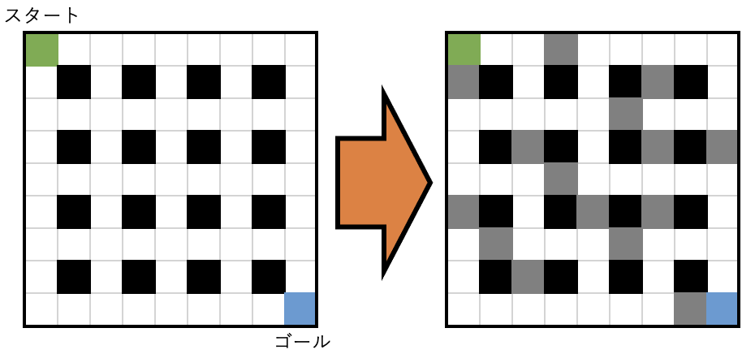
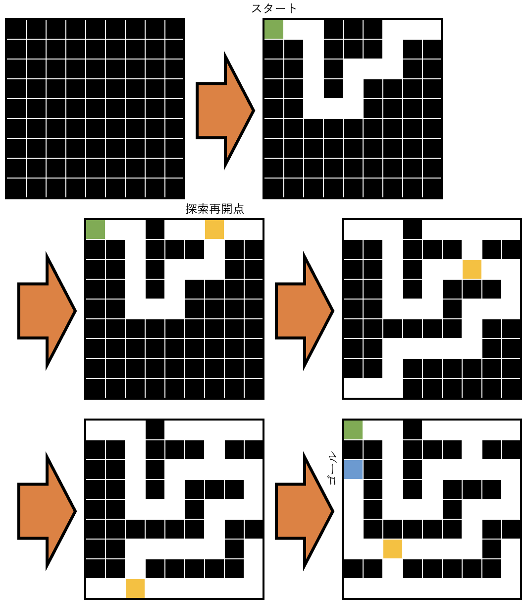

▲
top
top
Pythonのtkinterで迷路の制作を目指す
迷路制作（１）
大筋のアルゴリズムの決定
アルゴリズム[1]：壁をランダムに作る
１マスおきに1x1の正方形を配置し、その全ての正方形から左右上下からランダムに選ばれた方向に1x1の正方形を生やす方法。

アルゴリズム[2]：道をランダムに作る
スタートから1x2の長方形を左右上下からランダムに選ばれた方向に生やし、そこを道とする方法。もし進める方向がなくなった時は進める方向が現れる地点まで戻ってから道づくりをまた始める。

アルゴリズム[1]の方が簡単そうであるので、[1]から実装を進めようと思う。
次： 迷路制作（２） 迷路アプリの下地の制作
迷路制作のページ： １ ２ ３
にっきのページに戻る